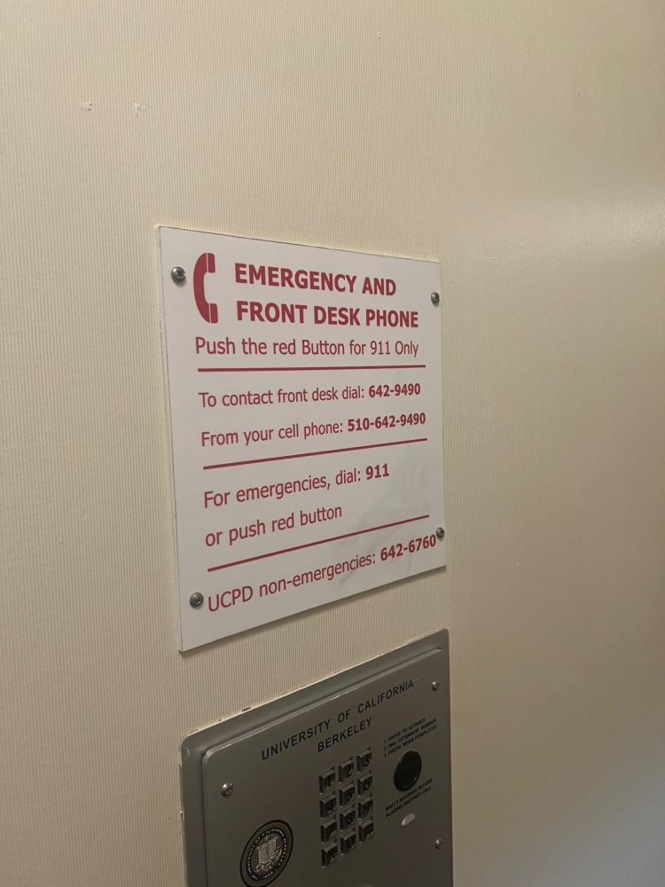
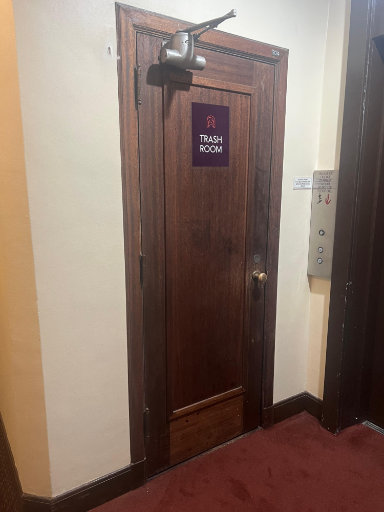
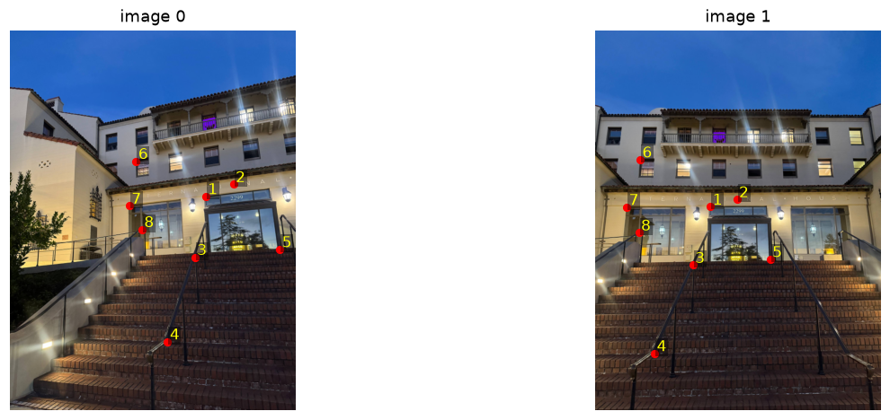
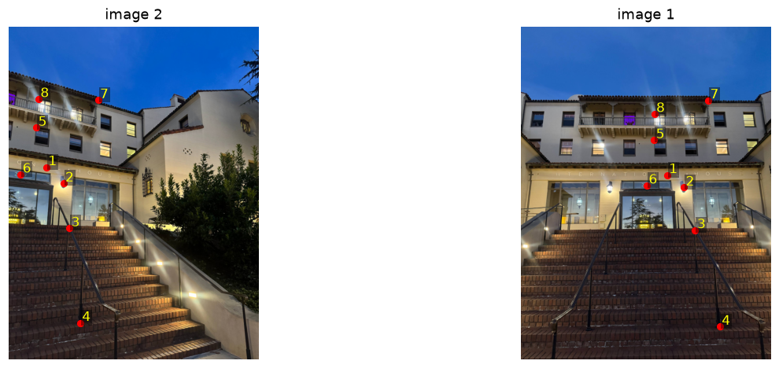
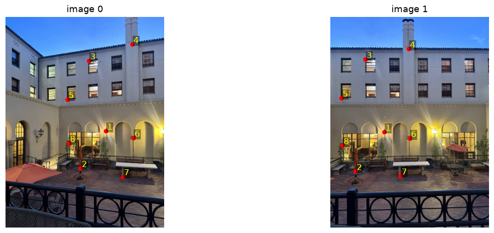
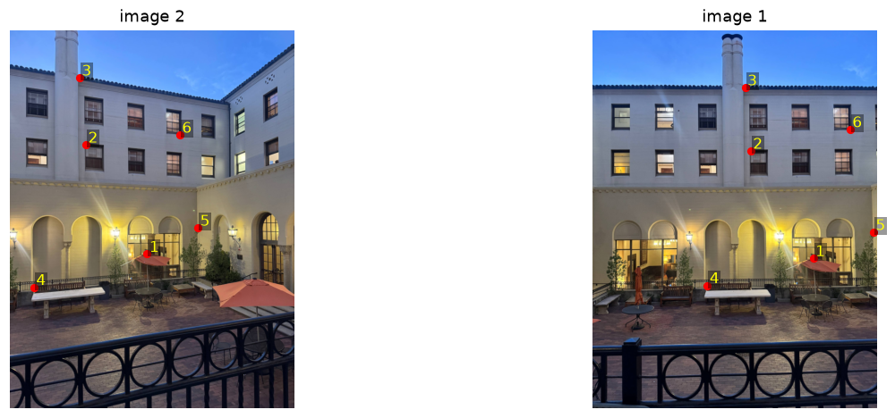
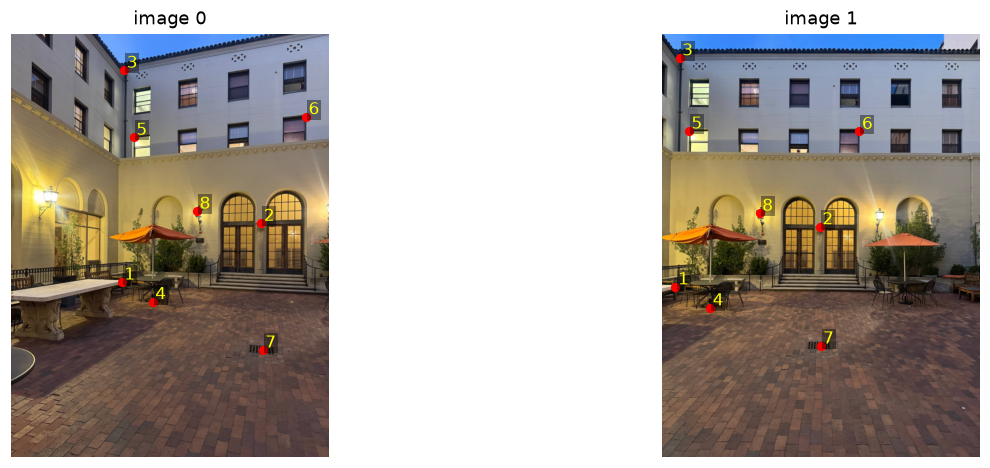
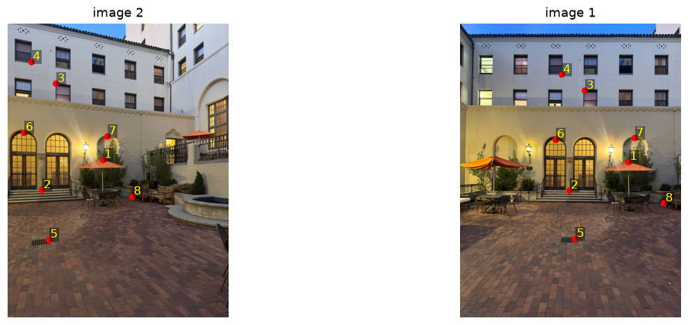
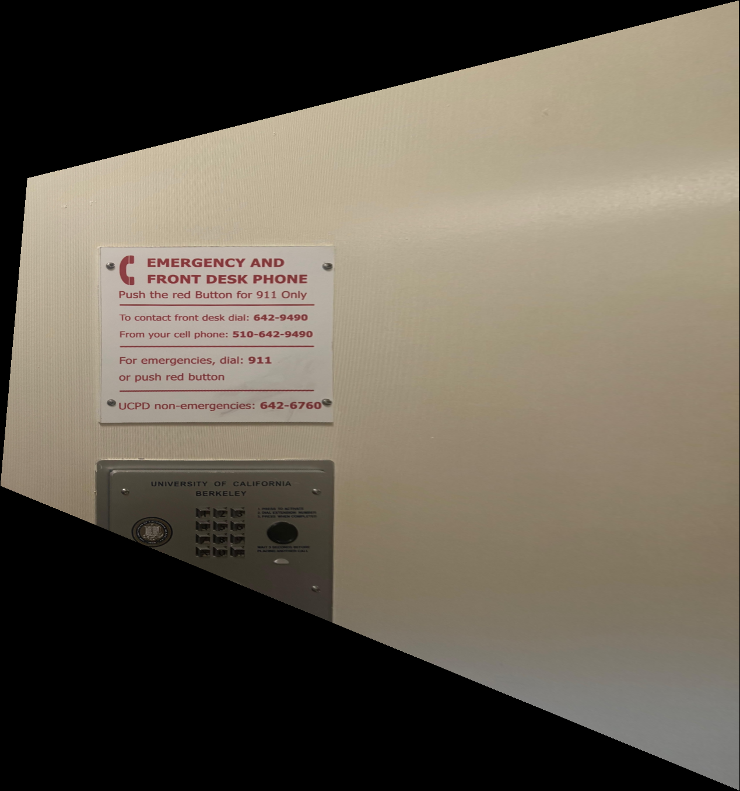
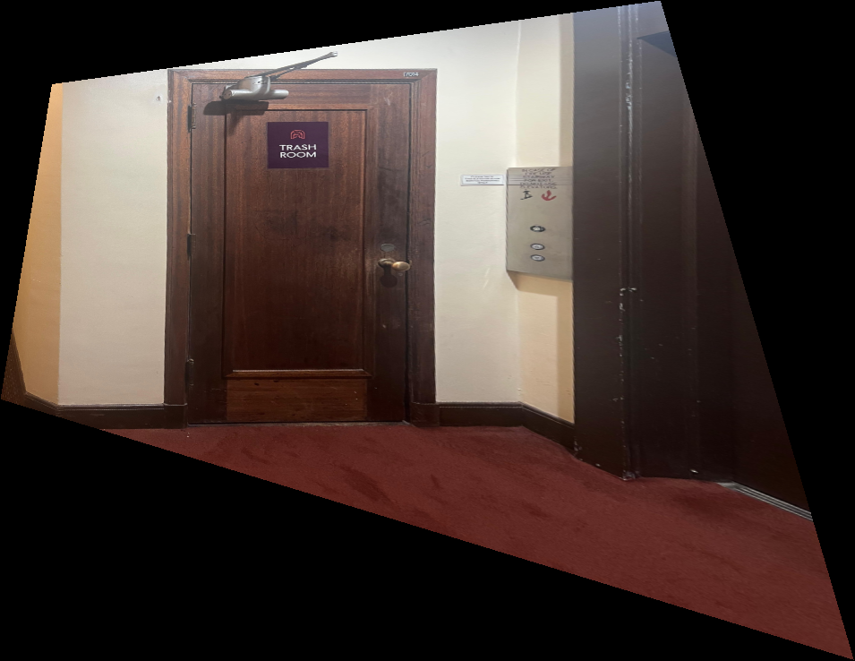

Project 4 · Part A
Homographies from hand-clicked points, two warps written from scratch, and three blended mosaics.
For each set, I stood in one spot and only rotated the camera between shots. That keeps the centre of projection fixed, so a homography relates the views, and it works no matter what the 3D scene looks like. I shrank everything to 1000 px on the long side (750 × 1000, portrait) so clicking and warping stay quick. The middle shot, image 1, is the reference in every set, and images 0 and 2 get warped into its frame.
An emergency sign above a keypad box, and a wooden door. Both were shot at an angle.


A homography sends a point (x, y) in one image to (x′, y′) in another through a 3×3 matrix, followed by a division by the third coordinate. Scaling H doesn't change the mapping, so I fix H33 = 1 and that leaves 8 unknowns.
Multiplying out the division by w gives two equations per correspondence that are linear in the eight unknowns:
Four points would pin H down exactly, but then a couple of pixels of click error swing it a lot. So I clicked 8 points per pair (6 for mosaic 2's right-to-centre pair), stacked all the rows into one tall A h = b with A of size 2n × 8, and let np.linalg.lstsq find the h that minimises ‖A h − b‖². build_system makes A and b, and computeH(im1_pts, im2_pts) solves it.
def build_system(im1_pts, im2_pts):
"""Stack A h = b for the 8 unknowns of H (H[2,2] = 1). Two rows per point."""
A, b = [], []
for (x, y), (xp, yp) in zip(im1_pts, im2_pts):
A.append([x, y, 1, 0, 0, 0, -x * xp, -y * xp]); b.append(xp)
A.append([0, 0, 0, x, y, 1, -x * yp, -y * yp]); b.append(yp)
return np.array(A, float), np.array(b, float)
def computeH(im1_pts, im2_pts):
"""Least-squares homography with im2_pts ~ H @ im1_pts (both n x 2, (x, y))."""
A, b = build_system(im1_pts, im2_pts)
h = np.linalg.lstsq(A, b, rcond=None)[0]
return np.append(h, 1).reshape(3, 3)Points are numbered on each pair. Image 0 and image 2 are each matched to the reference, image 1.






A (2n x 8) | b (2n)
[ 513.46, 437. , 1. , 0. , 0. , 0. , -155281.95, -132158.45] | 302.42
[ 0. , 0. , 0. , 513.46, 437. , 1. , -238552.67, -203029.06] | 464.60
[ 586.51, 405.34, 1. , 0. , 0. , 0. , -217840.06, -150551.14] | 371.42
[ 0. , 0. , 0. , 586.51, 405.34, 1. , -261066.83, -180425.53] | 445.12
[ 485.05, 596.9 , 1. , 0. , 0. , 0. , -124248.89, -152900.09] | 256.16
[ 0. , 0. , 0. , 485.05, 596.9 , 1. , -299765.25, -368889.68] | 618.01
[ 413.62, 819.31, 1. , 0. , 0. , 0. , -64321.12, -127407.28] | 155.51
[ 0. , 0. , 0. , 413.62, 819.31, 1. , -351641.65, -696531.78] | 850.15
[ 708.27, 576.61, 1. , 0. , 0. , 0. , -325149.39, -264709.1 ] | 459.08
[ 0. , 0. , 0. , 708.27, 576.61, 1. , -426790.19, -347456.43] | 602.58
[ 330.83, 344.47, 1. , 0. , 0. , 0. , -38825.4 , -40425.73] | 117.36
[ 0. , 0. , 0. , 330.83, 344.47, 1. , -112617.94, -117259.88] | 340.41
[ 312.97, 462.16, 1. , 0. , 0. , 0. , -25806.13, -38107.39] | 82.45
[ 0. , 0. , 0. , 312.97, 462.16, 1. , -145660.96, -215094.55] | 465.41
[ 346.25, 523.85, 1. , 0. , 0. , 0. , -39511.09, -59776.8 ] | 114.11
[ 0. , 0. , 0. , 346.25, 523.85, 1. , -184476.53, -279096.74] | 532.78The matrices for every pair are written out in results/<mosaic>_H.txt.
To check each H, I push every clicked point in the source image through it and compare the result with where I clicked in the reference. In the plots below, the green dot is the point I clicked in the reference and the red + is the source click after H. The gap between them is the error.
| mosaic | pair | points | mean error | max error |
|---|---|---|---|---|
| mosaic 1 | 0 → 1 | 8 | 1.50 | 2.24 |
| mosaic 1 | 2 → 1 | 8 | 2.14 | 3.00 |
| mosaic 2 | 0 → 1 | 8 | 1.70 | 3.88 |
| mosaic 2 | 2 → 1 | 6 | 1.23 | 2.19 |
| mosaic 3 | 0 → 1 | 8 | 1.63 | 3.06 |
| mosaic 3 | 2 → 1 | 8 | 2.63 | 4.80 |
Mean errors land between 1.2 and 2.6 px, and the single worst point is 4.8 px (mosaic 3, right to centre, in red above). The biggest misses are on points that sit off the main wall plane, like the drain and the umbrella. That points to parallax first, then click error and lens distortion.
warpImageNearestNeighbor(im, H) and warpImageBilinear(im, H) both use inverse warping. I push the four corners of the image through H to get the bounding box of the output. Then every output pixel goes back through H−1 to find where it should read from in the source. Doing it this way means every output pixel gets asked for a value, so there are no holes. Output pixels whose source lands outside the photo get mask = 0, which matters later for blending.
The two methods differ only in how they read the source at a non-integer position. nearest neighbour rounds to the closest pixel and copies it. bilinear takes a weighted average of the four pixels around the position, using the fractional parts a = x − ⌊x⌋ and b = y − ⌊y⌋ as weights:
def apply_H(H, pts):
p = np.c_[pts, np.ones(len(pts))] @ H.T
return p[:, :2] / p[:, 2:3]
def output_bbox(shape, H):
"""Integer bounding box (xmin, ymin, xmax, ymax) of the image's corners pushed through H."""
h, w = shape[:2]
c = apply_H(H, np.array([[0, 0], [w - 1, 0], [w - 1, h - 1], [0, h - 1]], float))
return (int(np.floor(c[:, 0].min())), int(np.floor(c[:, 1].min())),
int(np.ceil(c[:, 0].max())), int(np.ceil(c[:, 1].max())))
def inverse_coords(H, bbox):
"""For every output pixel in bbox, the (x, y) it reads from in the source (via H^-1)."""
xmin, ymin, xmax, ymax = bbox
xs, ys = np.meshgrid(np.arange(xmin, xmax + 1), np.arange(ymin, ymax + 1))
p = np.stack([xs.ravel(), ys.ravel(), np.ones(xs.size)])
q = np.linalg.inv(H) @ p
return (q[0] / q[2]).reshape(xs.shape), (q[1] / q[2]).reshape(xs.shape)
def warpImageNearestNeighbor(im, H, bbox=None):
h, w = im.shape[:2]
bbox = bbox or output_bbox(im.shape, H)
sx, sy = inverse_coords(H, bbox)
col, row = np.round(sx).astype(int), np.round(sy).astype(int)
mask = (col >= 0) & (col < w) & (row >= 0) & (row < h)
out = np.zeros(sx.shape + im.shape[2:], dtype=float)
out[mask] = im[row[mask], col[mask]]
return out, mask.astype(float), bbox
def warpImageBilinear(im, H, bbox=None):
h, w = im.shape[:2]
bbox = bbox or output_bbox(im.shape, H)
sx, sy = inverse_coords(H, bbox)
mask = (sx >= 0) & (sx <= w - 1) & (sy >= 0) & (sy <= h - 1)
x, y = sx[mask], sy[mask]
x0 = np.minimum(np.floor(x).astype(int), w - 2) # top-left neighbour
y0 = np.minimum(np.floor(y).astype(int), h - 2)
a, b = x - x0, y - y0 # fractional parts
if im.ndim == 3:
a, b = a[:, None], b[:, None]
out = np.zeros(sx.shape + im.shape[2:], dtype=float)
out[mask] = ((1 - a) * (1 - b) * im[y0, x0] + a * (1 - b) * im[y0, x0 + 1]
+ (1 - a) * b * im[y0 + 1, x0] + a * b * im[y0 + 1, x0 + 1])
return out, mask.astype(float), bboxBefore trusting the warps on real mosaics, I tested them on single photos. I click the four corners of something that should be a rectangle and map them to the corners of an upright rectangle. If H and the warp are right, the object comes out front-on. Everything else on that same plane gets straightened too.
# click 4 corners of a known rectangle, send them to an upright rectangle
im = load_image("rect_1.jpg", 1000)
p1 = np.array(corners_clicked) # 4 x 2, (x, y)
tw, th = target_size # the rectangle's real aspect ratio
p2 = np.array([[0, 0], [tw, 0], [tw, th], [0, th]], float)
H = computeH(p1, p2)
nn, _, _ = warpImageNearestNeighbor(im, H)
bil, _, _ = warpImageBilinear(im, H)

The sign and the door both come out front-on, and the wall around them gets straightened since it's on the same plane. Things that stick out of that plane don't straighten. The keypad under the sign stays skewed, because it's closer to the camera than the wall I clicked.
Zoomed in, the difference is in the edges. On the door, nearest neighbour leaves stair-steps along the frame, because each output pixel copies exactly one source pixel. Bilinear is smooth, and a touch softer. The third panel is |NN − bilinear|, and it lights up along the frame edge, where values can reach about 0.24. On the plain wall in the first figure, there's almost nothing to differ on, so the gap never goes above about 0.02.
| image | output size | nearest | bilinear | slowdown |
|---|---|---|---|---|
| rect 1 | 1269 × 1355 | 0.041 | 0.115 | 2.8× |
| rect 2 | 955 × 738 | 0.016 | 0.052 | 3.2× |
Bilinear takes about three times as long, since it reads four pixels and mixes them where nearest neighbour reads one. Both finish in well under a quarter of a second at these sizes, so the extra cost doesn't matter much and the mosaics below use bilinear throughout.
The reference image stays unwarped. The other two are warped into its frame with bilinear interpolation onto one shared canvas, which is the union of all three bounding boxes. That gives a stack of aligned images plus a mask for each, and the only question left is how to combine them. I tried three ways:
overwrite Later images simply paste over earlier ones. It's the baseline.
feathering A weighted average, where an image's weight at a pixel is its distance to the nearest empty pixel, so it's biggest in the middle of an image and fades to 0 at its border.
two-band Split each image into low and high frequencies. The low frequencies, which carry colour and exposure, get the feathered average. The high frequencies, which carry edges and fine detail, come from whichever image has the larger weight at that pixel. Colour blends smoothly across the overlap, but each edge comes from a single image, so it can't ghost.
HP = I − LP
# uses: from scipy.ndimage import distance_transform_edt, gaussian_filter
def warp_to_canvas(images, Hs, warp):
"""Warp every image (H maps it into the reference frame) onto one shared canvas."""
boxes = [output_bbox(im.shape, H) for im, H in zip(images, Hs)]
bbox = (min(b[0] for b in boxes), min(b[1] for b in boxes),
max(b[2] for b in boxes), max(b[3] for b in boxes))
warped, masks = [], []
for im, H in zip(images, Hs):
w_, m_, _ = warp(im, H, bbox)
warped.append(w_); masks.append(m_)
return warped, masks, bbox
def edge_weights(masks):
"""Weight = distance to the nearest empty pixel: biggest mid-image, 0 at the border."""
return [distance_transform_edt(m > 0) for m in masks]
def blend_overwrite(warped, masks):
out = np.zeros_like(warped[0])
for w_, m in zip(warped, masks):
out[m > 0] = w_[m > 0]
return out
def blend_feather(warped, masks):
ws = edge_weights(masks)
num = sum(w_ * wt[..., None] for w_, wt in zip(warped, ws))
den = sum(ws)[..., None]
return np.where(den > 0, num / np.maximum(den, 1e-8), 0)
def blend_laplacian(warped, masks, sigma=4):
"""Two-band: feather the low frequencies, take the high ones from the heaviest image."""
ws = edge_weights(masks)
lows, highs = [], []
for w_, m in zip(warped, masks):
lows.append(gaussian_filter(w_, (sigma, sigma, 0)))
highs.append(w_ - lows[-1])
den = np.maximum(sum(ws), 1e-8)[..., None]
low = sum(l * wt[..., None] for l, wt in zip(lows, ws)) / den
best = np.argmax(np.stack(ws), axis=0) # which image wins here
high = np.take_along_axis(np.stack(highs), best[None, ..., None], axis=0)[0]
covered = (sum(masks) > 0)[..., None]
return np.clip(low + high, 0, 1) * coveredThe side images get stretched outward, so the canvas ends up bow-tie shaped with black wedges. The glass doors are the weak spot here. Their reflection isn't on the wall plane, so one homography can't line it up in both images.
The building and the far side of the courtyard line up well. The railing in the foreground doesn't, because it's close to the camera, so it shifts between shots in a way that a rotation-only model can't explain.
This is the set with the worst single reprojection error (4.8 px). The arches and walls are fine, but the ground close to the camera drifts between images.
overwrite shows the seams, as expected.
feathering hides the seams, but wherever the images are slightly misregistered the detail gets averaged and ghosts.
two-band keeps the smooth colour of feathering and stays sharp. It's the one I'd recommend, and it's what the final mosaics above use.
The biggest surprise was how much of this project came down to the photos, not the code. Once the solve and the warps worked, the rectifications came out clean on the first try. The mosaics were different. Every misalignment I saw (the glass door reflections, the railing, the ground close to the camera) was something that doesn't sit on the same plane as the wall. A homography can only line up one plane, or a scene seen from a single spot.